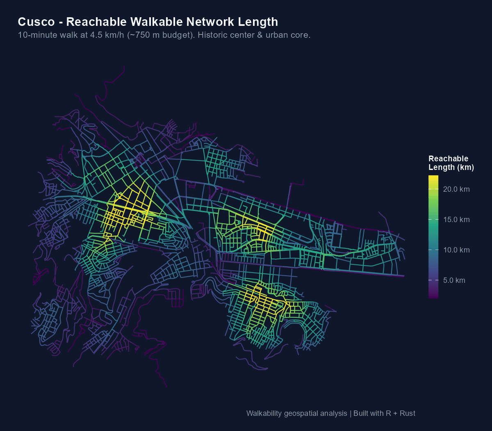

Resultados de Referencia: Cusco, Arequipa y Lima
Source:vignettes/ciudades-referencia.Rmd
ciudades-referencia.RmdComparativa Empírica en Tres Ciudades Peruanas
A continuación se resumen las métricas de red y los valores de
longitud alcanzable en 10 minutos a 4.5 km/h para tres
ciudades peruanas representativas analizadas con
walkability a partir de datos vectoriales abiertos de
transporte: Cusco, Arequipa y
Lima.
1. Estadísticas de Caminabilidad (Isócrona de 10 minutos)
| Métrica | Cusco (Centro Histórico / Wanchaq) | Arequipa (Área Metropolitana Central) | Lima (Centro y Eje Tradicional) |
|---|---|---|---|
| Máximo alcanzado | 24.2 km | 27.2 km | 29.4 km |
| Promedio urbano | 9.9 km | 12.2 km | 14.4 km |
| Mínimo (calle sin salida) | 0.8 km | 0.8 km | 0.8 km |
| Rango percentil (5º–95º) | 2.3 – 20.6 km | 3.6 – 21.9 km | 3.5 – 24.1 km |
2. Dimensiones y Topología de la Red Peatonal
| Característica | Cusco | Arequipa | Lima |
|---|---|---|---|
| Nodos evaluados | 7,168 | 5,589 | 12,716 |
| Aristas consolidadas | 3,904 | 4,119 | 6,808 |
| Longitud total de red | 353.3 km | 357.6 km | 605.4 km |
| Proyección cartográfica | UTM 19S (EPSG:32719) | UTM 19S (EPSG:32719) | UTM 18S (EPSG:32718) |
| Presupuesto peatonal | 10 min (~750 m) | 10 min (~750 m) | 10 min (~750 m) |
Mapas Cartográficos de Caminabilidad
Los siguientes mapas fueron generados mediante
walk_compute_reach() (motor Rust paralelizado con Rayon) y
renderizados con walk_plot_reach() utilizando la paleta
perceptualmente uniforme viridis:
Cusco
En Cusco, la alta densidad de pasajes peatonales y la trama colonial compacta del Centro Histórico y San Blas destacan con los valores más altos de red alcanzable (tonos amarillos y verdes claros), mientras que las laderas y zonas de topografía abrupta reducen drásticamente la conectividad efectiva:

Hallazgos Principales
- Permeabilidad del Damero Tradicional: Las áreas centrales de las tres ciudades alcanzan entre 24 y 29 km de red caminable en 10 minutos, reflejando manzanas cuadradas cortas y alta densidad de intersecciones.
- Impacto de la Geografía y Topografía: En Cusco, el contraste entre el fondo de valle plano y las laderas pronunciadas genera un gradiente de caminabilidad mucho más abrupto (percentil 5% de 2.28 km) en comparación con Lima o Arequipa.
- Escala Cartográfica Robusta: En las tres ciudades, la escala recortada entre los percentiles 2% y 98% permite distinguir con nitidez los núcleos de alta caminabilidad sin distorsión por tramos periféricos aislados.